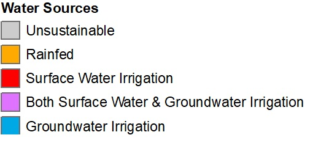

Choose a layer:
400mm-s1-Rainfed
400mm-s1-sw
400mm-s1-gw
400mm-s1-sw+gw
400mm-s2-Rainfed
400mm-s2-sw
400mm-s2-gw
400mm-s2-sw+gw
400mm-s3-Rainfed
400mm-s3-sw
400mm-s3-gw
400mm-s3-sw+gw
600mm-s1-Rainfed
600mm-s1-sw
600mm-s1-gw
600mm-s1-sw+gw
600mm-s2-Rainfed
600mm-s2-sw
600mm-s2-gw
600mm-s2-sw+gw
600mm-s3-Rainfed
600mm-s3-sw
600mm-s3-gw
600mm-s3-sw+gw
800mm-s1-Rainfed
800mm-s1-sw
800mm-s1-gw
800mm-s1-sw+gw
800mm-s2-Rainfed
800mm-s2-sw
800mm-s2-gw
800mm-s2-sw+gw
800mm-s3-Rainfed
800mm-s3-sw
800mm-s3-gw
800mm-s3-sw+gw
Select a Season and Crop Water
400mm-Season-1
400mm-Season-2
400mm-Season-3
600mm-Season-1
600mm-Season-2
600mm-Season-3
800mm-Season-1
800mm-Season-2
800mm-Season-3
Admin Boundary

All pump- Suitability:
NAME_3
400mm
600mm
800mm
rf
sw_al
gw_al
swgw_al
rf
sw_al
gw_al
sgw_al
rf
sw_al
gw_al
swgw_al
Sustainable Area:
NAME_3
400mm
600mm
800mm
rf
sw
gw
sgw
rf
sw
gw
sgw
rf
sw
gw
sgw